AUREN · UX-CAL-01 / PLAN-CAL-01 · 9 NOVEMBRE 2026
Un instrument natif.
Sept contextes de calibrage.
Revue des pixels candidats sous GO BUILD contrôlé et croquis G1 déjà acceptés. Pixels contrôlés acceptés le9novembre2026 : « Valider ces pixels contrôlés ». Aucun composant MISSION, baseline ou règle scientifique historique remplacé.
Nature des preuves. Captures PNG natives brutes. Le parcours connecté iOS machine a réellement acquis contexte, choix, familiarisation, essai et acceptation dans le ledger du serveur jetable. Les autres états sont relus par de vrais ports HTTP propriétaires dans un banc natif isolé qui importe le même présentateur de production et le même AccountFrame. Le banc ne remplace pas la preuve de consommateur : le vrai parcours HTTP sept rencontres → producteur V3 → ack exact → même séance et journal typé passe aussi en tests. Les formulaires du banc sont des exemples de phase locale ; aucun statut ou droit SCI n’est fabriqué. Les données sont entièrement synthétiques. Aucune expérience humaine, clinique ou recette physique revendiquée.
Comparaison à la référence acceptée
Un seul changement : étendre l’acquisition du pilote aux six autres contextes via un instrument commun. Le cadre existant et les primitives acceptées restent la base. Référence du8novembre à gauche, nouveau calibrage à droite. Cliquer ouvre chaque capture entière.
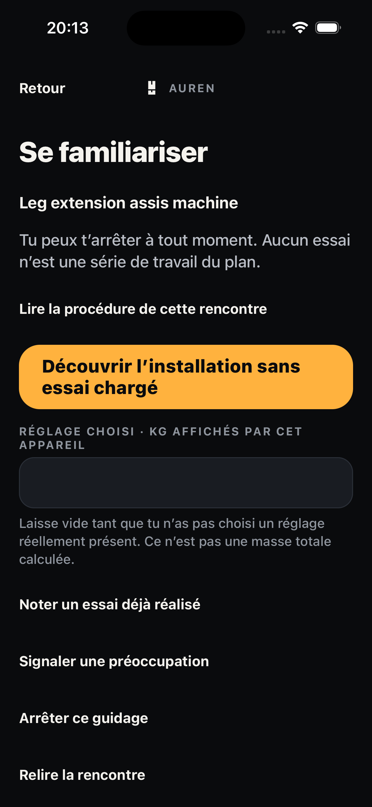
Référence acceptée · 8novembreAncien guidage du pilote, copie inchangée de la référence ; aucune régénération.
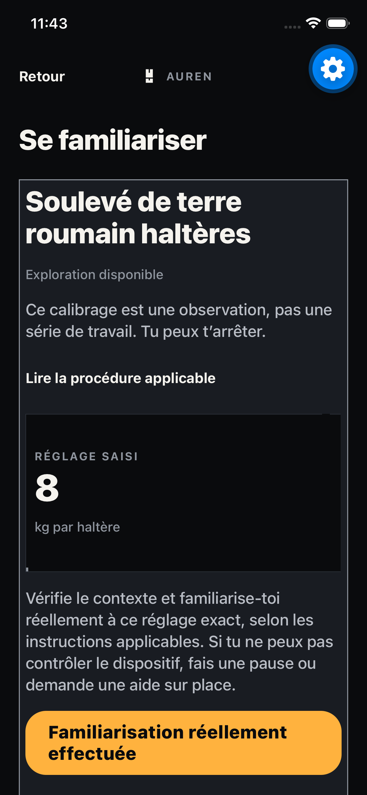
Familiarisation au réglage exactRDL : 8 kg PAR HALTÈRE, choix synthétique saisi via HTTP. Contexte et permissions relus au serveur.
Le parcours commun
Choix → contexte/setup → réglage → familiarisation exacte → intention d’essai → faits → décision provisoire. Une commande principale par phase ; le reste du contenu défile. Pas de série de travail, de score ou de poids optimal.
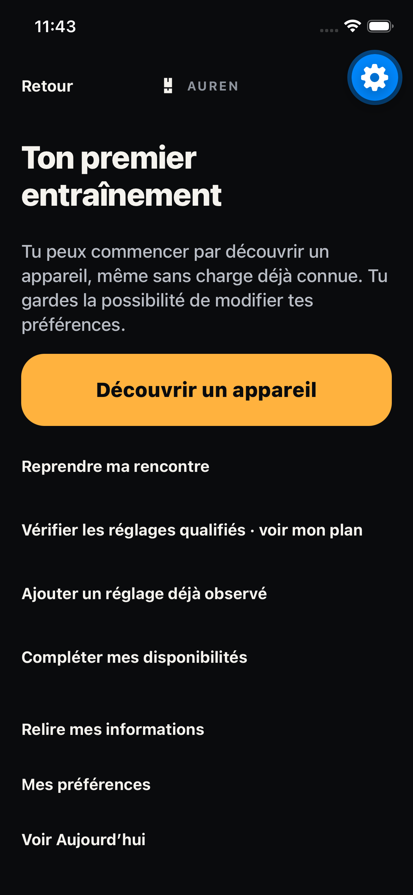
Premier passageComposant complet PlanV3FirstUseScreen, vrais ports HTTP. iOS 390×844 pt.
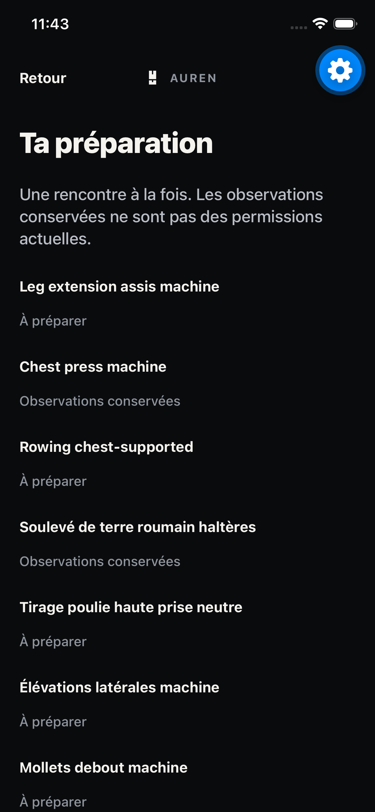
Sept contextes, une préparationSélecteur du vrai écran. Observations conservées ≠ permissions actuelles. Pas de compteur de réussite inventé.
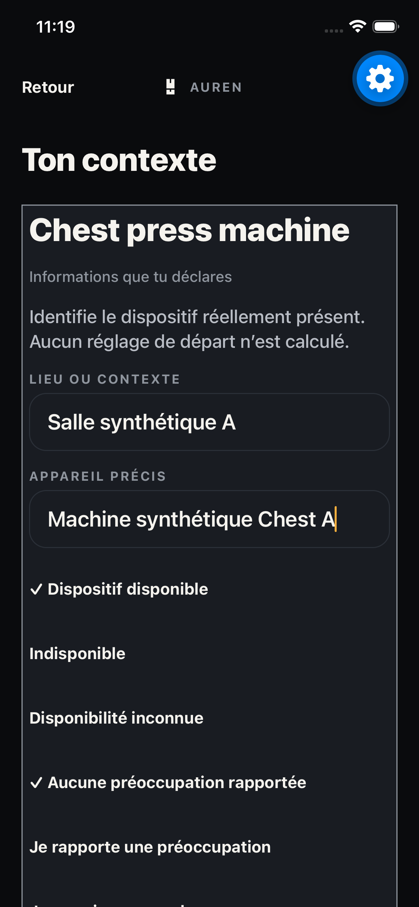
Contexte réellement déclaréParcours connecté iOS exercé : identité du dispositif, lieu, disponibilité et préoccupation. Capture d’acquisition antérieure à l’extraction du présentateur.
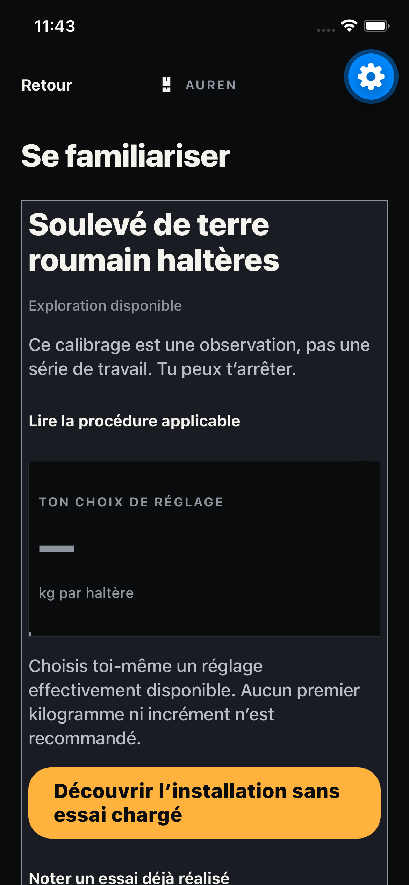
Choisir un réglage disponibleMême présentateur de production. Champ initial vide ; aucune charge ni incrément recommandé.
Familiarisation au réglage exactRDL : 8 kg PAR HALTÈRE, choix synthétique saisi via HTTP. Contexte et permissions relus au serveur.
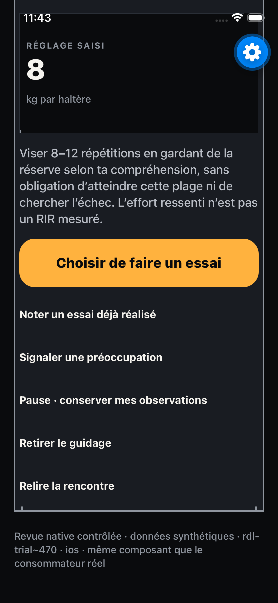
Choisir un essaiIntention distincte du fait. Fenêtre C3 de la vraie politique ; aucun résultat de série fabriqué.
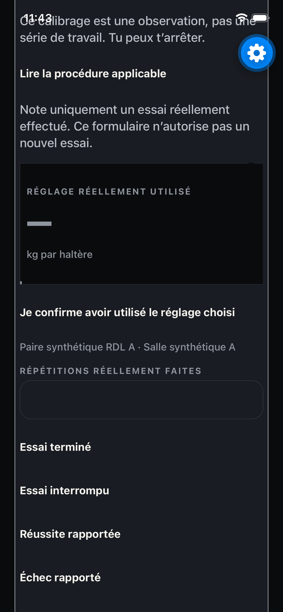
Fait : réglage réellement utiliséChamp factuel séparé du choix. Copie du choix seulement après confirmation humaine explicite. Défilement natif positionné par le banc.
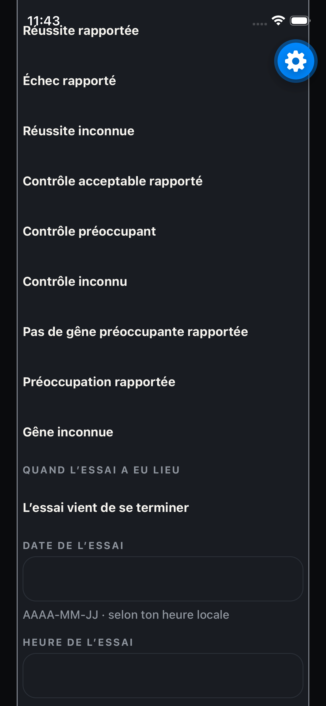
Fait : contrôle, gêne, réussiteValeurs inconnues conservées. Réussite et complétion séparées ; sélection explicite.
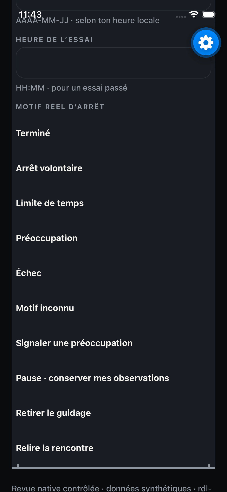
Fait : occurrence et motifHeure de l’essai réellement déclarée, distincte de l’heure d’enregistrement. Motif jamais inféré.
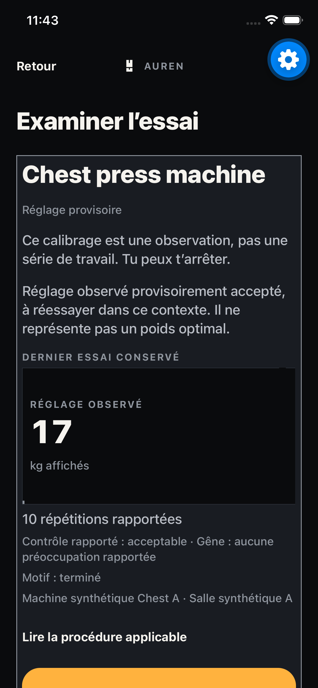
Qualification provisoireVrai résultat serveur QUALIFIED après parcours natif machine. 17 kg AFFICHÉS et 10 répétitions = témoignages synthétiques, pas recommandation.
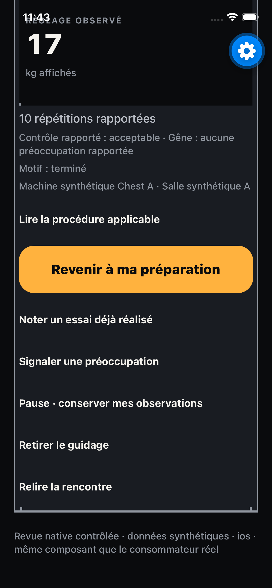
Faits conservés, repriseSuite défilée de la décision ; retour à la préparation, pause et retrait distincts.
Inconnu, attente, revue et retrait
Une observation conservée ne donne aucune permission actuelle. Les préoccupations et le retrait traversent les reprises et changements de contexte. Aucune reprise automatique après préoccupation.
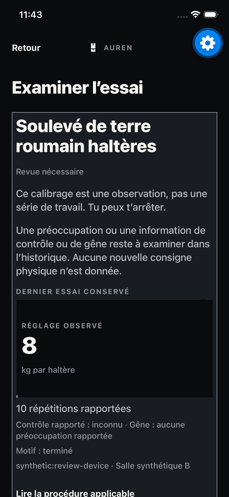
Revue nécessaireCompte synthétique distinct : contrôle UNKNOWN. Vraie décision SCI, aucune nouvelle consigne physique.
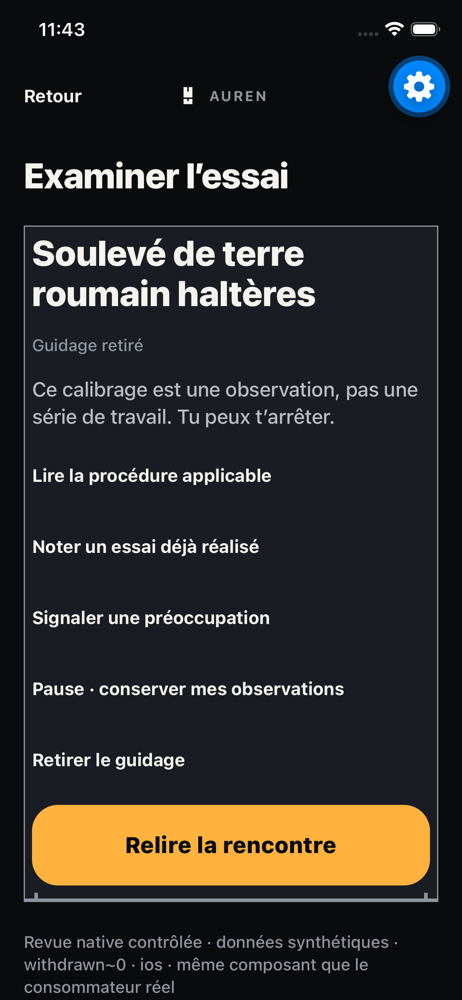
Guidage retiréRetrait enregistré dans le vrai ledger propriétaire. Lecture et faits séparés des droits présents.
Permission inconnue après pausePause réelle du contrôleur : faits conservés, aucune nouvelle consigne sans revalidation.
Relecture en attenteTransport de test suspendu après pause ; vrai contrôleur et même présentateur, actions désactivées. Aucune réponse SCI inventée.
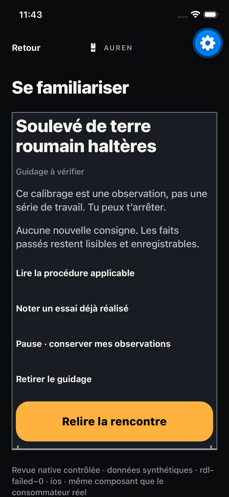
Échec réseau contrôléException du transport de test après pause ; pas de succès substitué. Historique conservé, relecture nécessaire.
Rendus natifs, largeur et saisie
iOS26.3 : simulateur dédié390×844pt, PNG1170×2532. AndroidAPI36 : émulateur dédié, PNG1080×1920,360 ou480dp selon densité. Les différences de retour à la ligne sont de vrais layouts natifs. La molette bleue iOS et le losange Android appartiennent au client de développement, pas au produit. Le défilement des vues détaillées est positionné par le banc sans retouche du PNG.
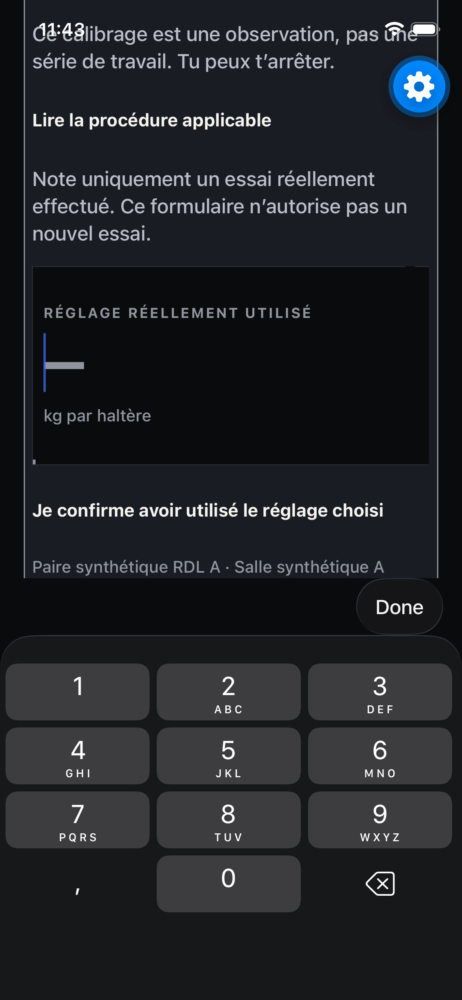
Clavier iOS, focus réelClavier logiciel décimal affiché sur le vrai champ : virgule, Done, défilement/évitement du clavier. Aucun kg déduit du champ vide.
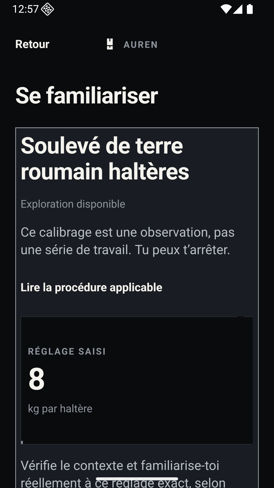
Android · petit · 360 dp1080×1920 px, densité480, texte1.0. Présentateur commun, lecture propriétaire réelle.
 Android · masse affichée
Android · masse affichée360 dp, suite défilée de la décision machine. Aucun traitement en masse externe totale.
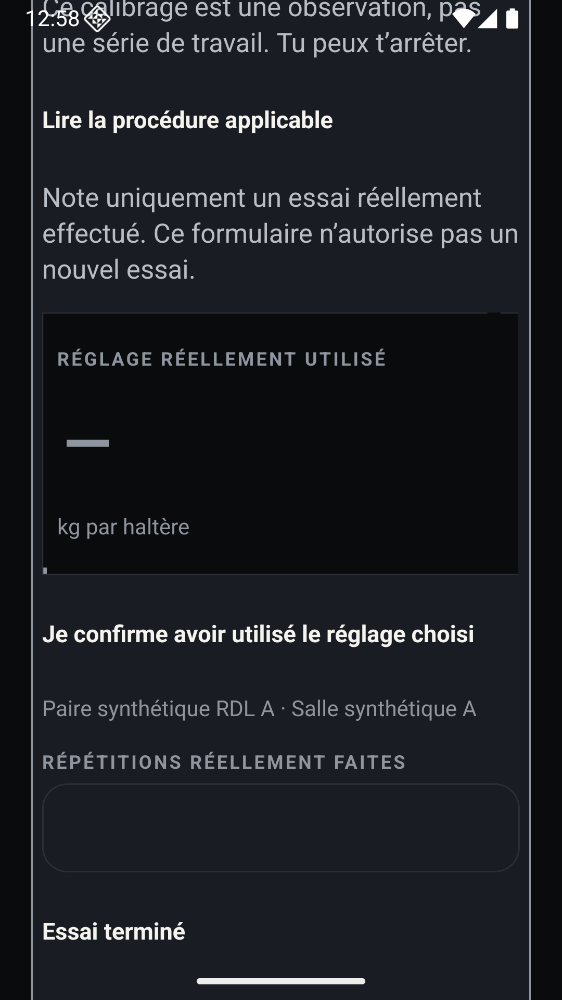
Android · observation360 dp : champ factuel séparé, pas de copie silencieuse. Défilement natif positionné par le banc.
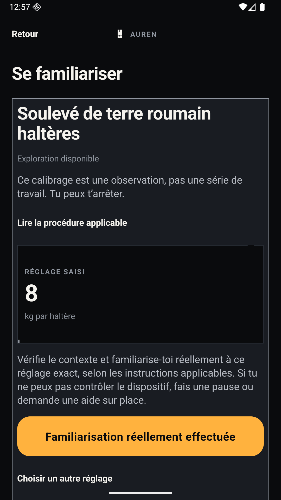
Android · grand · 480 dp1080×1920 px, densité360, texte1.0. Recomposition React Native réelle, aucun redimensionnement d’image.
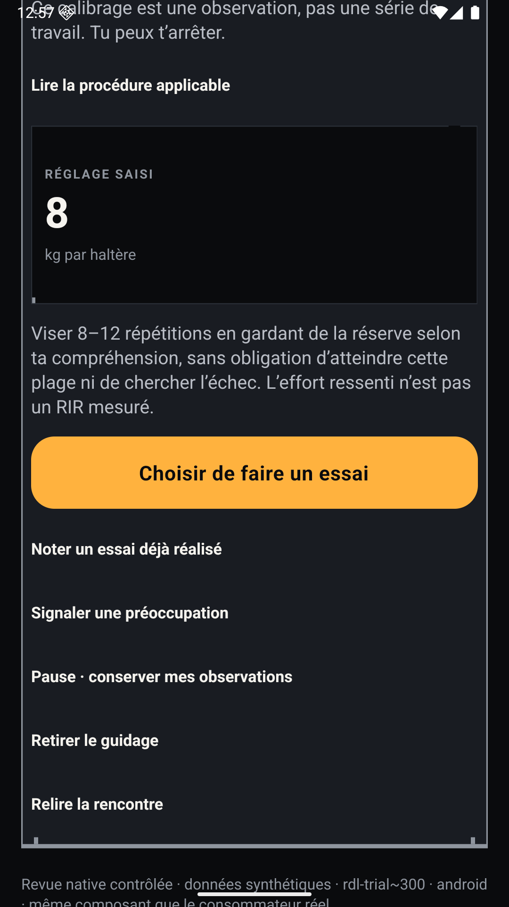
Android · essai480 dp, intention et sortie séparées, même politique source.
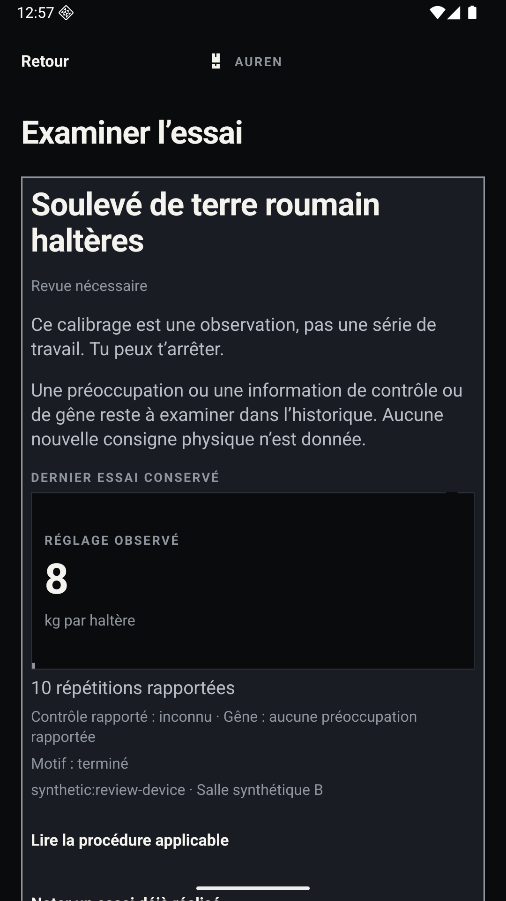
Android · revue480 dp, décision réelle du compte de revue. Aucun guidage physique après contrôle inconnu.
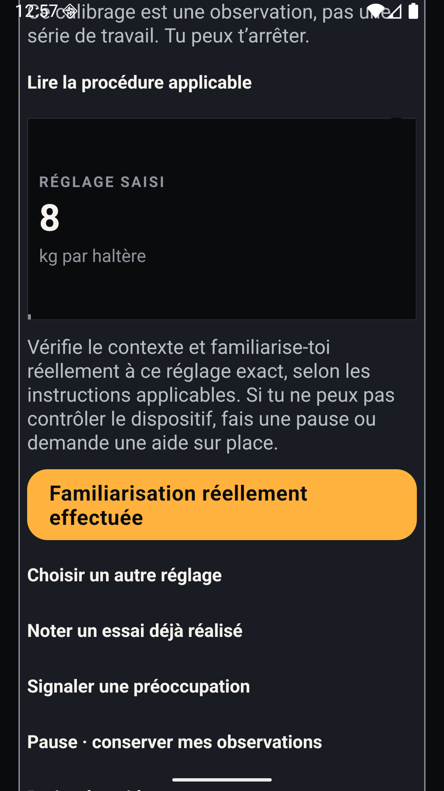
Android · texte130 %480 dp, font_scale1.3. Cadre mesuré selon son contenu et hauteur de fenêtre adaptée ; contenu vertical défilant.
Après sept preuves applicables : V3, accord exact, séance
Compositions déjà acceptées du8novembre, réutilisées comme références : proposition → reconnaissance de temps incertain → séance native et journal. Ce sont des références historiques identifiées, pas de nouvelles captures d’un READY personnel. La chaîne serveur nouvelle a été exécutée avec les vrais évaluateurs/validateurs et sept acquisitions synthétiques : temps UNKNOWN/BUDGET_UNCERTAIN, REQUIRES_TIME_ACK, puis ELIGIBLE seulement après ack exact, création idempotente et récupération du même session_id. RDL PER_IMPLEMENT reste typé dans le journal ; aucune masse externe totale inventée.
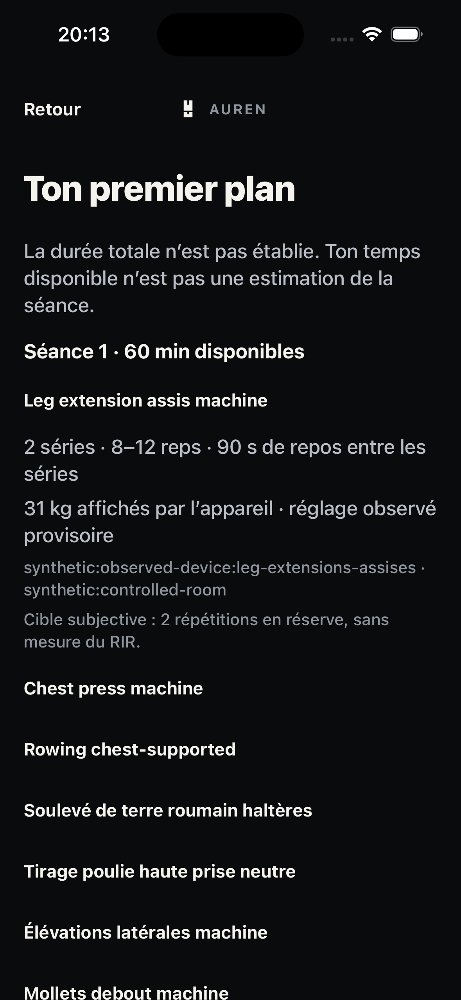
PropositionRéférence acceptée conservée octet pour octet. Aucun nouveau pixel de cette surface revendiqué.
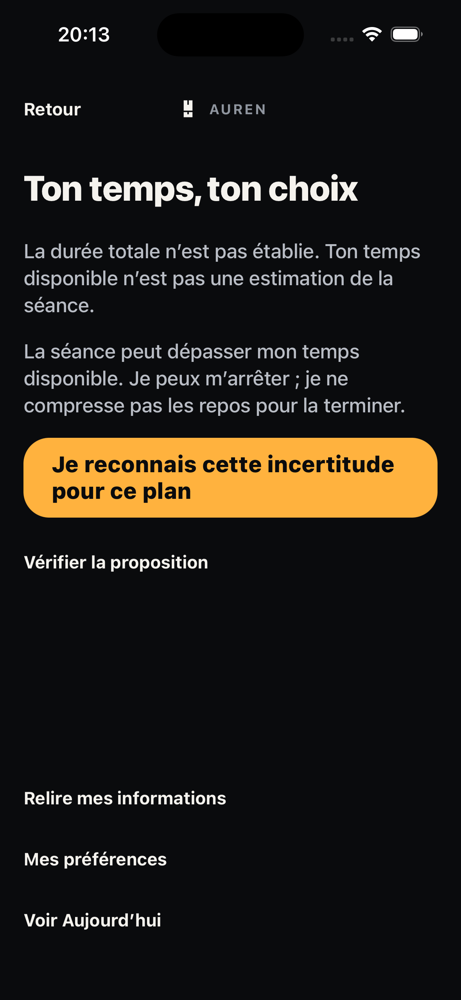
Accord temporel exactRéférence acceptée conservée octet pour octet. Aucun nouveau pixel de cette surface revendiqué.
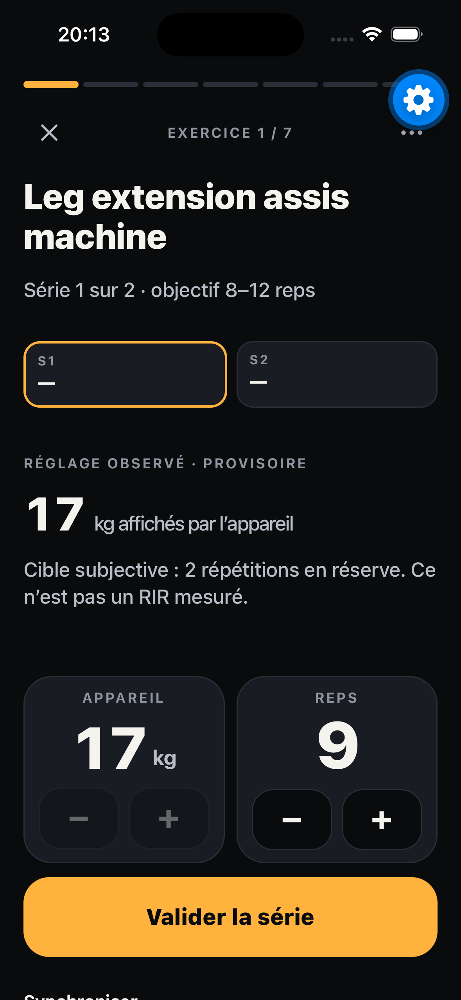
Exécution existanteRéférence acceptée conservée octet pour octet. Aucun nouveau pixel de cette surface revendiqué.
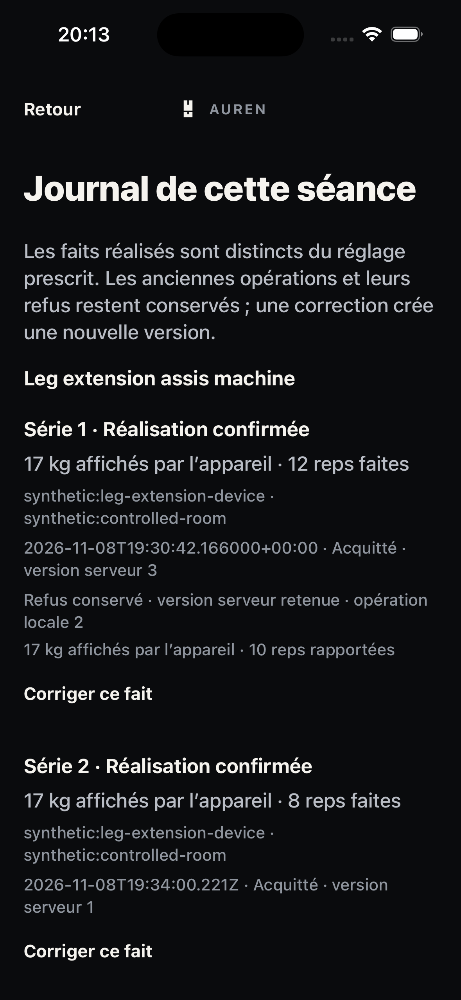
Journal et correctionRéférence acceptée conservée octet pour octet. Aucun nouveau pixel de cette surface revendiqué.
Information → source → porteur
| Élément | Source réelle | Portée |
|---|
| Nom, réalisation, unité | Catalogue attesté, inventaire privé2 et contexte exact SCI | Pas de nom/devise/réalisation inférée |
| Choix disponible et installation | Déclaration utilisateur dans ledger owner/source_revision ; notice et setup applicables | Aucun kg recommandé ; UNKNOWN conservé |
| Réglage réellement utilisé, répétitions, contrôle, gêne, motif et occurrence | Saisie explicite → événement propriétaire, provenance et vraie chronologie | Le choix ne devient pas un fait sans confirmation ; motif non déduit |
| Qualification et actions courantes | Vrais load_authority/evaluate/validate_result et génération serveur | Provisoire, LOW ; aucune sûreté médicale certifiée |
| Observations conservées et reprise | Ledger, sélection possédée et brouillon/outbox partitionnés par compte | Historique distinct de la permission actuelle |
| Temps, accord et session | V3 canonique, fingerprints exacts, action humaine et reçu CREATED possédé | UNKNOWN ≠ fit ; aucune séance avant preuve serveur |
Accessibilité et limites vérifiables
Primitives existantes : FrameC, RecessedWindow, NumericReadout, mark et tokens. Aucun CalibrationRail/E7, StepControls sans incrément, image anatomique ou nouvelle palette. Labels explicites avec unité, contrôle disabled pendant mutation, titre de rôle header, statut annoncé en live region polite. Ordre AX iOS relevé : retour → titre/mouvement/statut → faits ou champ de réglage → commande de phase → pause/retrait/relecture. Réglage observé libellé comme tel, distinct du choix ; correction couverte par le vrai test d’écran.
Clavier décimal iOS réellement affiché avec virgule et Done, focus visible ; date/heure séparées de la complétion. Android texte130 % réellement rendu, cadre mesuré et contenu défilant. Les nouvelles vues n’introduisent aucune animation : leur information reste statique en réduction des mouvements. La lecture VoiceOver/TalkBack, le retour système Android et le clavier Android en parcours complet restent des éléments de recette physique ; aucune certification annoncée ici.
Deux mineurs de revue conservés : renforcement du décodage client par liaison croisée au profil négocié ; aide avant ouverture/protocole mieux ciblé par réalisation. Les vérifications d’autorité serveur, les types d’unité et les règles SCI ne sont pas dispensés.
SHA256 des captures et références. Aucune baseline modifiée automatiquement. La réception pixels porte cette composition contrôlée ; DATA, activation, distribution et Android/iPhone physiques restent séparés.